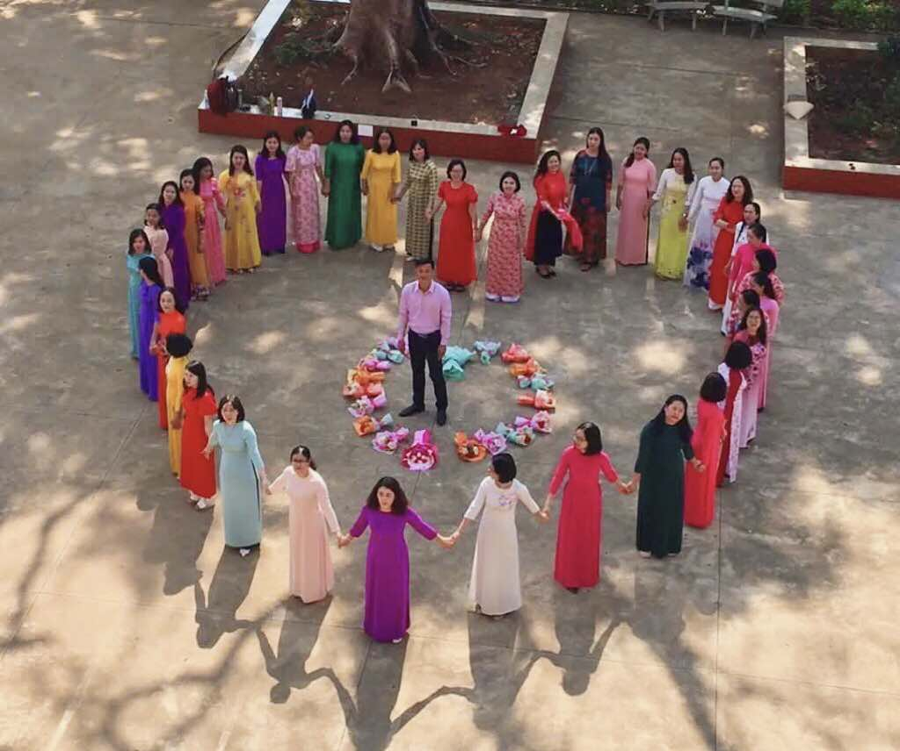

|
Chào Mừng Ngày Nhà Giáo Việt Nam 20/11"Tôn sư trọng đạo - Tri ân thầy cô" |
|
Chào Mừng Ngày Nhà Giáo Việt Nam 20/11"Tôn sư trọng đạo - Tri ân thầy cô" |
Ngày Nhà giáo Việt Nam (20/11) là ngày lễ nhằm tôn vinh các thầy cô giáo và những người làm trong ngành giáo dục. Đây là dịp để học sinh, sinh viên bày tỏ lòng biết ơn đối với những người đã dạy dỗ, truyền đạt tri thức và đạo đức cho mình.
Lịch sử và ý nghĩa
• Ngày 20/11 bắt nguồn từ Hội nghị Quốc tế các nhà giáo tiến bộ họp tại Ba Lan vào năm 1949, khi tổ chức FISE (Liên hiệp quốc tế các Công đoàn Giáo dục) ra bản “Hiến chương các nhà giáo”.
• Việt Nam hưởng ứng phong trào này và từ năm 1958, ngày 20/11 chính thức trở thành Ngày Hiến chương Nhà giáo Việt Nam.
• Đến năm 1982, ngày 20/11 được chính thức công nhận là Ngày Nhà giáo Việt Nam, trở thành ngày kỷ niệm quan trọng trong ngành giáo dục.
Hoạt động trong ngày 20/11
• Học sinh, sinh viên thường tặng hoa, thiệp, và gửi lời tri ân đến thầy cô.
• Các trường học tổ chức mít tinh, văn nghệ, hoặc các cuộc thi để chào mừng.
• Đây cũng là dịp để các thế hệ học trò về thăm lại trường cũ, gặp gỡ thầy cô.
Ngày Nhà giáo Việt Nam không chỉ là dịp để tôn vinh nghề giáo mà còn nhắc nhở về giá trị của sự học và truyền thống “tôn sư trọng đạo” của dân tộc.

Địa chỉ: Thành phố Gia Nghĩa, tỉnh Đắk Nông
Điện thoại: 033.xxx.xxxx
Email: chuvanan123@thptchuvanan.edu.vn
© 2025 Báo tường 20/11 - Nhóm 1 Lớp 12A4